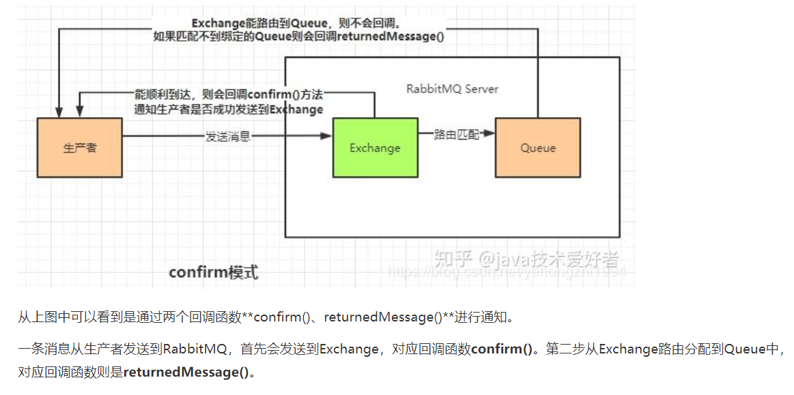

1、数据丢失原因
队列中丢失数据(消息持久化)：
RabbitMQ是支持消息持久化的，消息持久化需要设置：Exchange为持久化和Queue持久化，这样当消息发送到RabbitMQ服务器时，消息就会持久化。
处理消息队列丢数据的情况，一般是开启持久化磁盘的配置。这个持久化配置可以和confirm机制配合使用，你可以在消息持久化磁盘后，再给生产者发送一个Ack信号。这样，如果消息持久化磁盘
之前，rabbitMQ阵亡了，那么生产者收不到Ack信号，生产者会自动重发。
那么如何持久化呢，这里顺便说一下吧，其实也很容易，就下面两步
①、将queue的持久化标识durable设置为true,则代表是一个持久的队列
②、发送消息的时候将deliveryMode=2
生产者丢失数据(confirm机制)
生产者的消息没有投递到MQ中怎么办？从生产者弄丢数据这个角度来看，RabbitMQ提供transaction和confirm模式来确保生产者不丢消息。
transaction机制就是说，发送消息前，开启事物(channel.txSelect())，然后发送消息，如果发送过程中出现什么异常，事务就会回滚(channel.txRollback())，如果发送成功则提交事
物(channel.txCommit())。
然而缺点就是吞吐量下降了。因此，生产上用confirm模式的居多。一旦channel进入confirm模式，所有在该信道上面发布的消息都将会被指派一个唯一的ID(从1开始)，一旦
消息被投递到所有匹配的队列之后，rabbitMQ就会发送一个Ack给生产者(包含消息的唯一ID)，这就使得生产者知道消息已经正确到达目的队列了.如果rabiitMQ没能处理该消息，则会发送一个N
ack消息给你，你可以进行重试操作。
在生产者发送到RabbitMQ Server时有可能因为网络问题导致投递失败，从而丢失数据。我们可以使用confirm模式防止数据丢失。工作流程是怎么样的呢，看以下图解：
消费者丢失数据，事务机制(ACK)
消费者从队列中获取到消息后，会直接确认签收，假设消费者宕机或者程序出现异常，数据没有正常消费，这种情况就会出现数据丢失。
启用手动确认模式可以解决这个问题
①自动确认模式，消费者挂掉，待ack的消息回归到队列中。消费者抛出异常，消息会不断的被重发，直到处理成功。不会丢失消息，即便服务挂掉，没有处理完成的消息会重回队列，但是异常会让消息不断重试。
②手动确认模式
③不确认模式，acknowledge="none" 不使用确认机制，只要消息发送完成会立即在队列移除，无论客户端异常还是断开，只要发送完就移除，不会重发。
指定Acknowledge的模式：
spring.rabbitmq.listener.direct.acknowledge-mode=manual，表示该监听器手动应答消息1、创建队列和发送消息时将设置durable=Ture，如果在接收到消息还没有存储时，消息也有可能丢失，就必须配置publisher confirm channel.queue_declare(queue='task_queue', durable=True)
2、返回一个ack，进程收到消息并处理完任务后，发给rabbitmq一个ack表示任务已经完成，可以删除该任务
3、镜像队列：将queue镜像到cluster中其他的节点之上。 在该实现下，如果集群中的一个节点失效了，queue能自动地切换到镜像中的另一个节点以保证服务的可用性
三、RabbitMQ如何控制消息被消费的顺序？使用多个队列，不同的队列对应不同的消费者
四、以下RabbitMQ的exchange type分别代表什么意思？如：fanout、direct、topic。amqp协议中的核心思想就是生产者和消费者隔离，生产者从不直接将消息发送给队列。
生产者通常不知道是否一个消息会被发送到队列中，只是将消息发送到一个交换机。
先由Exchange来接收，然后Exchange按照特定的策略转发到Queue进行存储。
同理，消费者也是如此。Exchange 就类似于一个交换机，转发各个消息分发到相应的队列中。
--------------------------------------------------
type=fanout 类似发布者订阅者模式，会为每一个订阅者创建一个队列，而发布者发布消息时，会将消息放置在所有相关队列中
type=direct 队列绑定关键字，发送者将数据根据关键字发送到消息exchange，exchange根据 关键字 判定应该将数据发送至指定队列。
type=topic 队列绑定几个模糊的关键字，之后发送者将数据发送到exchange，exchange将传入”路由值“和 ”关键字“进行匹配，匹配成功，
则将数据发送到指定队列。
---------------------------------------------------
发送者路由值 队列中
old.boy.python old.* -- 不匹配 *表示匹配一个
old.boy.python old.# -- 匹配 #表示匹配0个或多个